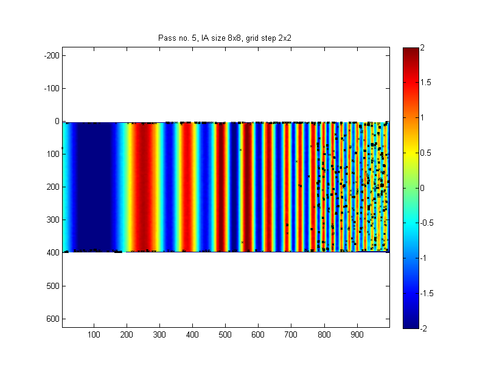
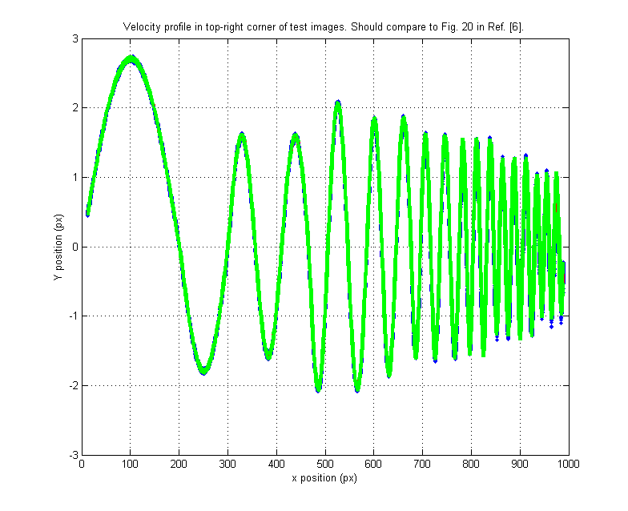
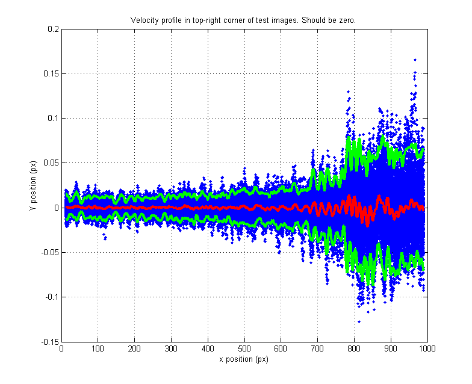
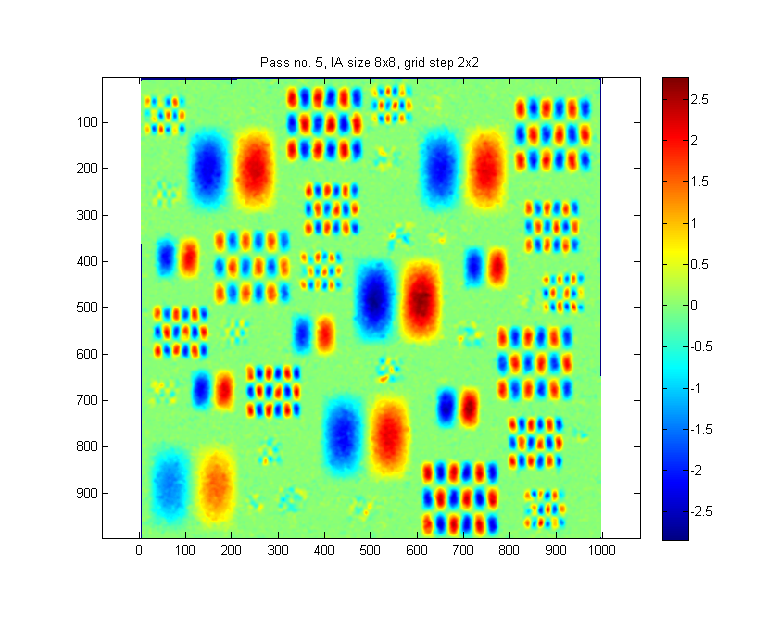
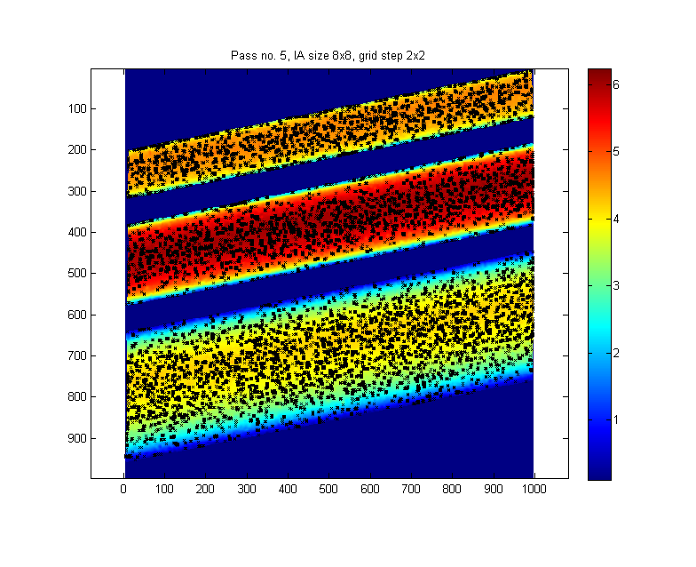
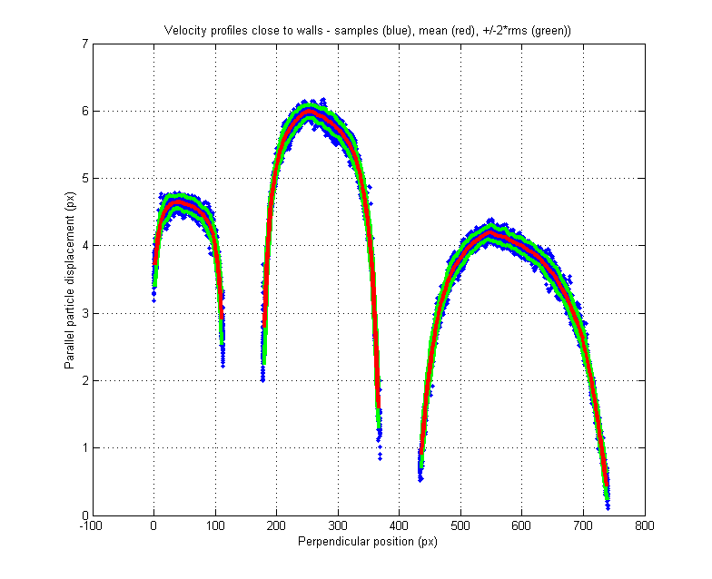
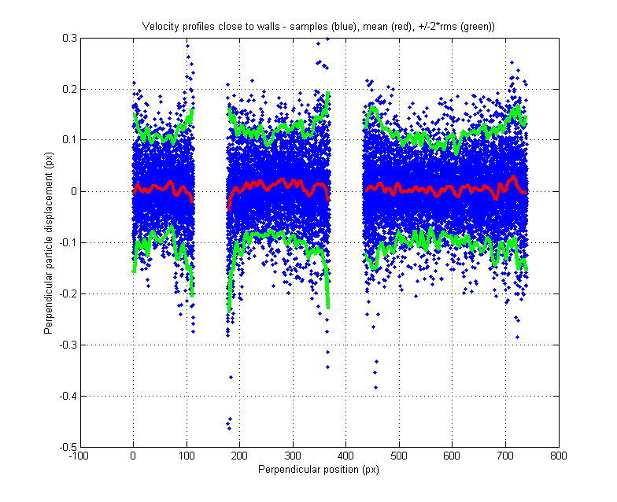
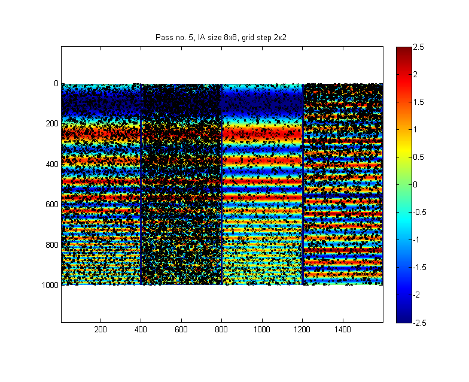
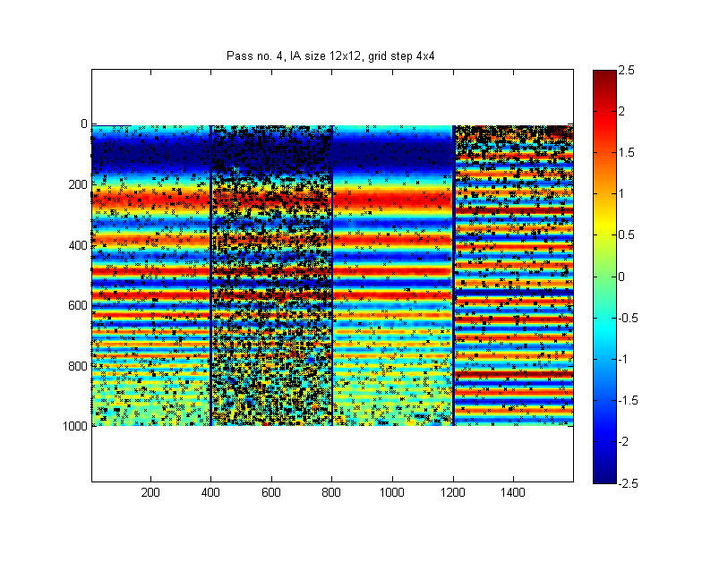

Example 04 - Treatment of test images from PIV Challenge
This example treats images from the images of test case A4 of 3rd PIV challenge (Stanislas, Ref. [6]). To visualize more easily results, the four parts of the image are treated separately.
[6] Stanislas, M., K. Okamoto, C. J. Kahler, J. Westerweel and F. Scarano, (2008): Main results of the third international PIV Challenge. Experiments in Fluids, vol. 45, pp. 27-71.
Instructions:
- Download images (case A4) from PIVchallenge site,
- Unzip them to folder ../Data/Test PIVChallenge3A4,
- Run this example.
Contents
1. Top right corner of the test image
In this test, the spacial resolution of the method is tested. In this case, we decrease the size of interrogation areas to 8x8 pixels with 75% overlap; this allows to resolve quite well even velocity gradients occuring in small region.
% read the images clear; try im1Orig = imread(['..',filesep,'Data',filesep,'Test PIVchallenge3A4',filesep,'A4001_a.tif']); im2Orig = imread(['..',filesep,'Data',filesep,'Test PIVchallenge3A4',filesep,'A4001_b.tif']); imMaskOrig = imread(['..',filesep,'Data',filesep,'Test PIVchallenge3A4',filesep,'Mask.png']); catch % if error on loading images, probably images were not downloaded. Give a message. error(['No images found. Please, download images (case A4) from http://www.pivchallenge.org/pub05/A/A4.zip, '... 'unzip them and place them to folder ../Data/Test PIVChallenge3A4.']); end % cut out the top right corner im1 = im1Orig(1:400,1000:end); im2 = im2Orig(1:400,1000:end); imMask = imMaskOrig(1:400,1000:end); % initialize pivParameters and results pivPar = []; % initialize treatment pivParameters pivData = []; % initialize detailed results that will go to this structure % store masking image to pivPar pivPar.imMask1 = imMask; pivPar.imMask2 = imMask; % define the size of interrogation area and spacing of the evaluation grid pivPar.iaSizeX = [24 16 8 8 8]; % size of interrogation area in X pivPar.iaStepX = [12 8 4 2 2]; % grid in X % set the validation distance quite long to cover short wavelengths; set some smoothing pivPar.vlDist = 5; pivPar.smSigma = 0.05; % display the vertical velocity component and location of invalid vectors during evaluation pivPar.qvPair = {'V','clipLo',-2,'clipHi',2,'invLoc'}; figure(1); % set other pivParameters to defaults [pivPar1, pivData1] = pivParams(pivData,pivPar,'defaults'); % run the analysis [pivData1] = pivAnalyzeImagePair(im1,im2,pivData1,pivPar1); fprintf('Elapsed time %.2f s (last pass %.2f s), subpixel interpolation failed for %.2f%% vectors, %.2f%% of vectors rejected.\n', ... sum(pivData1.infCompTime), pivData1.infCompTime(end), ... pivData1.ccSubpxFailedN/pivData1.N*100, pivData1.spuriousN/pivData1.N*100);
Elapsed time 115.42 s (last pass 53.48 s), subpixel interpolation failed for 0.82% vectors, 1.08% of vectors rejected.
We will plot the mean velocity profile, and several sample profiles for this part. These results should compare with Fig. 20 in Ref. [6].
% Prepare data for plotting the velocity profiles plX = pivData1.X(5:end-4,5:end-4); plY = pivData1.Y(5:end-4,5:end-4); plU = pivData1.U(5:end-4,5:end-4); plV = -pivData1.V(5:end-4,5:end-4); % change the V sign, because V is positive % for downward flow in PIVsuite plUmean = mean(plU,1); % mean velocity profile plUstd = std(plU,0,1); % velocity rms profile plVmean = mean(plV,1); % mean velocity profile plVstd = std(plV,0,1); % velocity rms profile
We will plot now the vertical velocity profile. Velocity samples are shown by blue dots. Red line is the profile of mean velocity and green lines show the range, into which a measurement will fall with 95% probability.
figure(2); plot(... plX',plV','b.',... % all velocity samples plX',plVmean','-r',... % mean velocity plX',plVmean'+2*plVstd','-g',... % mean + 2*rms plX',plVmean'-2*plVstd','-g',... % mean - 2*rms 'LineWidth',3); title('Velocity profile in top-right corner of test images. Should compare to Fig. 20 in Ref. [6].'); xlabel('x position (px)'); ylabel('Y position (px)'); grid on;
For x > 700 px, there is some attenuation of signal amplitude (the velocity profile should have amplitude of 1.5 px in its last part). Nevertheless, the velocity profile is quite well resolved. The velocity rms is below 0.03 px for x < 400 px, then it increases to 0.15 px (green line).
Now, the same plot for horizontal velocity component is provided. Again, velocity samples are shown by blue dots. Red line is the profile of mean velocity and green lines show the range, into which a measurement will fall with 95% probability.
figure(3); plot(... plX',plU','b.',... % all velocity samples plX',plUmean','-r',... % mean velocity plX',plUmean'+2*plUstd','-g',... % mean + 2*rms plX',plUmean'-2*plUstd','-g',... % mean - 2*rms 'LineWidth',3); title('Velocity profile in top-right corner of test images. Should be zero.'); xlabel('x position (px)'); ylabel('Y position (px)'); grid on;
2. Test pattern in bottom left corner
In this part of test image, the spacial resolution of the method is tested. The size of interrogation areas is decreased to 8x8 pixels with 75% overlap; this leads to good spacial resolution, but long processing time (~5 min on my laptop).
im1 = im1Orig(1000:end,1:1000);
im2 = im2Orig(1000:end,1:1000);
imMask = imMaskOrig(1000:end,1:1000);
pivPar.imMask1 = imMask;
pivPar.imMask2 = imMask;
pivPar.qvPair = {'V'};
figure(4);
[pivPar2, pivData2] = pivParams(pivData,pivPar,'defaults');
[pivData2] = pivAnalyzeImagePair(im1,im2,pivData2,pivPar2);
fprintf('Elapsed time %.2f s (last pass %.2f s), subpixel interpolation failed for %.2f%% vectors, %.2f%% of vectors rejected.\n', ...
sum(pivData2.infCompTime), pivData2.infCompTime(end), ...
pivData2.ccSubpxFailedN/pivData2.N*100, pivData2.spuriousN/pivData2.N*100);
Elapsed time 269.50 s (last pass 107.41 s), subpixel interpolation failed for 2.86% vectors, 12.70% of vectors rejected.
3. Test pattern in top left corner
This part of test images represents flow close to boundaries; purpose is to test whether the velocity is decreasing toward zero close the walls. In this example, we will show a color map of velocity magnitudes and also velocity profiles for components parallel and perpendicular to the channel.
In this example, where the flow close to wall is of interest, it is essential to mask the image (that is, to define regions of image, which contains particles and are usuful for detecting the velocity, and regions where no particles are present like solid objects. This is done by the masking image, which is a binary (black-and-white) image, where value 0 defines masked area (walls etc), and 1 denotes useful area. Usually, this image can be created manually from a PIV image using common image treatment software like Adobe Photoshop, Corel PhotoPaint, or GIMP.
im1 = im1Orig(1:1000,1:1000); im2 = im2Orig(1:1000,1:1000); imMask = imMaskOrig(1:1000,1:1000); pivPar.imMask1 = imMask; pivPar.imMask2 = imMask; pivPar.vlTresh = 3; % validation tolerance is increased for this test, otherwise too much % spurious vectors are detected (default value is vtTresh = 2) pivPar.qvPair = {'Umag','invLoc'}; figure(5); [pivPar3, pivData3] = pivParams(pivData,pivPar,'defaults'); [pivData3] = pivAnalyzeImagePair(im1,im2,pivData3,pivPar3); fprintf('Elapsed time %.2f s (last pass %.2f s), subpixel interpolation failed for %.2f%% vectors, %.2f%% of vectors rejected.\n', ... sum(pivData3.infCompTime), pivData3.infCompTime(end), ... pivData3.ccSubpxFailedN/pivData3.N*100, pivData3.spuriousN/pivData3.N*100);
Elapsed time 207.07 s (last pass 80.73 s), subpixel interpolation failed for 1.09% vectors, 6.20% of vectors rejected.
Now, coordinate system and velocity components will be transformed to be in direction parallel and perpendicular to the boundaries.
% show results for a grid aligned with inclined boundary layers [Xnew,Ynew] = meshgrid((50:2:700)',(-20:2:780)'); x0 = 1; % origin of the new grid y0 = 204; phi = 11.41 * pi/180; % this is angle of channels % Express positions of new grid points in "old" coordinate system Xold = Xnew*cos(phi) + Ynew*sin(phi) + x0; Yold = -Xnew*sin(phi) + Ynew*cos(phi) + y0; % interpolate the velocity field for the new grid Uold = interp2(pivData3.X,pivData3.Y,pivData3.U,Xold,Yold); Vold = interp2(pivData3.X,pivData3.Y,pivData3.V,Xold,Yold); % recalculate velocity components to the new coordinate system Unew = Uold*cos(phi)-Vold*sin(phi); Vnew = Uold*sin(phi)+Vold*cos(phi); % compute mean and rms values plUmean = mean(Unew,2); % mean velocity profile plUstd = std(Unew,0,2); % velocity rms profile plVmean = mean(Vnew,2); % mean velocity profile plVstd = std(Vnew,0,2); % velocity rms profile
Plot the velocity component parallel to boundary in dependence on distance perpendicular to boundaries:
figure(6); plot(... Ynew(:,1:5:end),Unew(:,1:5:end),'b.',... % measured velocity profiles Ynew(:,1),plUmean+2*plUstd,'-g',... % rms profiles Ynew(:,1),plUmean-2*plUstd,'-g',... Ynew(:,1),plUmean,'-r',... % mean velocity 'LineWidth',3); xlabel('Perpendicular position (px)'); ylabel('Parallel particle displacement (px)'); title('Velocity profiles close to walls - samples (blue), mean (red), +/-2*rms (green))'); grid on
Plot the same, but for velocity component perpendicular to boundaries:
figure(7); plot(... Ynew(:,1:5:end),Vnew(:,1:5:end),'b.',... % measured velocity profiles Ynew(:,1),plVmean+2*plVstd,'-g',... % rms profiles Ynew(:,1),plVmean-2*plVstd,'-g',... Ynew(:,1),plVmean,'-r',... % mean velocity 'LineWidth',3); xlabel('Perpendicular position (px)'); ylabel('Perpendicular particle displacement (px)'); title('Velocity profiles close to walls - samples (blue), mean (red), +/-2*rms (green))'); grid on;
4. Test pattern in right lower part
This flow pattern is similar as in the right top corner, but images are less perfect (there is a particle loss of 20 and 60% between images; particles are of small size; and there is a decreasing number of particles)
% This part of image is processed trasposed in order to fit better the screen im1 = im1Orig(400:end,1000:end)'; im2 = im2Orig(400:end,1000:end)'; imMask = imMaskOrig(400:end,1000:end)'; % Do standard settings... pivPar.imMask1 = imMask; pivPar.imMask2 = imMask; pivPar = rmfield(pivPar,'vlDist'); pivPar.qvPair = {'U','clipLo',-2.5,'clipHi',2.5,'invLoc'}; figure(8); [pivPar4, pivData4] = pivParams(pivData,pivPar,'defaults'); % analyze images [pivData4] = pivAnalyzeImagePair(im1,im2,pivData4,pivPar4); fprintf('Elapsed time %.2f s (last pass %.2f s), subpixel interpolation failed for %.2f%% vectors, %.2f%% of vectors rejected.\n', ... sum(pivData4.infCompTime), pivData4.infCompTime(end), ... pivData4.ccSubpxFailedN/pivData4.N*100, pivData4.spuriousN/pivData4.N*100);
Elapsed time 446.50 s (last pass 189.56 s), subpixel interpolation failed for 21.93% vectors, 7.75% of vectors rejected.
For these conditions, it is perhaps better to decrease spatial resolution, but made evaluation more robust (and much faster):
% set smaller resolution (larger IA's, larger grid spacing) pivPar.iaSizeX = [24 16 12 12]; % size of interrogation area in X pivPar.iaStepX = [12 8 4 4]; % grid in X % other settings pivPar.qvPair = {'U','clipLo',-2.5,'clipHi',2.5,'invLoc'}; figure(9); [pivPar4, pivData4] = pivParams(pivData,pivPar,'defaults'); % perform PIV analysis [pivData4] = pivAnalyzeImagePair(im1,im2,pivData4,pivPar4); fprintf('Elapsed time %.2f s (last pass %.2f s), subpixel interpolation failed for %.2f%% vectors, %.2f%% of vectors rejected.\n', ... sum(pivData4.infCompTime), pivData4.infCompTime(end), ... pivData4.ccSubpxFailedN/pivData4.N*100, pivData4.spuriousN/pivData4.N*100);
Elapsed time 111.73 s (last pass 47.89 s), subpixel interpolation failed for 12.77% vectors, 9.67% of vectors rejected.